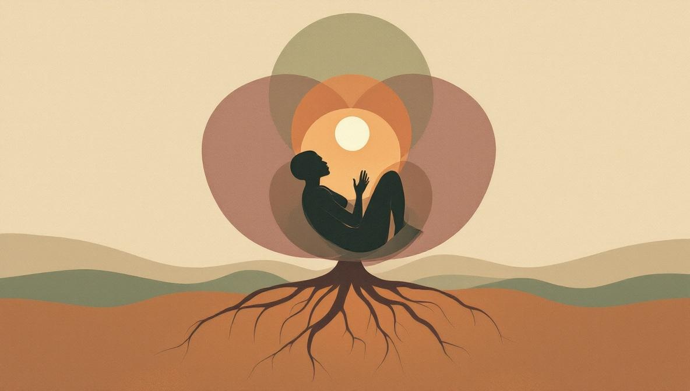

Cos'è la quarta casa astrologica?
La quarta casa astrologica è una delle quattro case angolari del tema natale. Comincia alla cuspide chiamata IC (Imum Coeli, «il punto più basso del cielo»), posizionata alla base della ruota del tema, e si estende fino alla cuspide della quinta casa. Se immagini il tema come un orologio, l'IC si trova all'altezza delle sei — il punto più profondo, il più nascosto. Questa posizione visiva non è casuale: la quarta casa è l'area del tema che parla di ciò che è interno, privato, radicato.
Nel linguaggio simbolico dell'astrologia, la quarta casa è in corrispondenza con il segno del Cancro e con la Luna — il suo governatore tradizionale. Il Cancro è il segno dell'appartenenza, della memoria e della protezione emotiva; la Luna è il corpo che governa i cicli, i bisogni istintivi e il primo legame con la figura che si è presa cura di noi. La quarta casa porta questa stessa qualità lunare: ricettiva, sensibile, legata alla memoria e al bisogno di sentirsi a casa.
I significati principali della quarta casa
La quarta casa si legge tradizionalmente attraverso quattro temi sovrapposti. Non sono quattro aree separate: sono diverse sfaccettature dello stesso nucleo — le fondamenta interiori su cui si costruisce la vita di una persona.
- Radici e famiglia d'origine. La quarta casa descrive il clima della famiglia in cui sei nato: il tono emotivo della casa d'infanzia, le regole non dette, gli schemi che si ripetono attraverso le generazioni. Non descrive i «fatti» letterali della tua famiglia, ma l'esperienza vissuta dell'appartenenza ad essa.
- Il genitore che ha nutrito. La maggior parte delle scuole moderne associa la quarta casa al genitore che ha svolto il ruolo nutritivo — storicamente la madre, ma più correttamente la figura che ha offerto cura emotiva. La casa opposta, la decima, parla del genitore strutturante. Alcune scuole tradizionali invertono i due significati: non considerare nessuna attribuzione come un dogma.
- La casa e il luogo in cui vivi. Oltre al simbolismo, la quarta casa parla anche della casa letterale: il luogo in cui vivi adesso, il tuo rapporto con gli spazi che abiti, il tipo di ambiente che ti permette di sentirti al sicuro. Le persone che cambiano spesso casa, che si sentono ospiti a casa propria, o che si rilassano solo in un certo tipo di ambiente, hanno spesso una quarta casa attiva.
- Sicurezza interiore e ciò che accade alla fine. La quarta casa si legge anche come la «fine della questione»: la base interiore da cui affronti la vita e le condizioni a cui torni nella vecchiaia. Una persona con una quarta casa coerente tende a trovare una casa interiore indipendentemente dalle circostanze esterne; una quarta casa frammentata indica spesso una ricerca irrisolta di questa base.

I pianeti nella quarta casa
Un pianeta in quarta casa intensifica i temi di famiglia, casa e sicurezza interiore secondo la sua natura. Ecco le letture più comuni — ricorda che sono punti di partenza, non verdetti definitivi: il resto del tema modula sempre il significato di una singola posizione.
- Sole in quarta casa. Una persona la cui identità è strettamente legata alla casa, alle radici e alla famiglia. C'è spesso un forte attaccamento al luogo d'origine, anche quando la vita porta altrove.
- Luna in quarta casa. La Luna è «a casa propria» qui — è il pianeta che governa naturalmente la quarta casa. Sensibilità emotiva marcata, legame profondo con la famiglia d'origine (positivo o complicato), spesso bisogno di un ambiente domestico stabile per funzionare.
- Venere in quarta casa. Cura estetica della casa, armonia nell'ambiente familiare, piacere nel ricevere e nell'essere ricevuti. La casa tende ad essere il luogo dove avvengono i gesti venusiani di bellezza e connessione.
- Marte in quarta casa. Tensioni o conflitti nell'ambiente familiare, energia indirizzata a difendere il proprio spazio. Può descrivere anche persone che ristrutturano, costruiscono o difendono attivamente la casa — o che hanno dovuto lottare, da bambini, per rivendicare il proprio posto.
- Saturno in quarta casa. Un'eredità di responsabilità portata fin dall'infanzia, a volte un senso di austerità o di freddezza nella famiglia d'origine. Col tempo, questa posizione costruisce spesso una base interiore eccezionalmente solida — ma il lavoro per arrivarci può durare decenni.
- Plutone in quarta casa. Dinamiche familiari che contengono qualcosa di profondo, trasformativo o nascosto. Il lavoro, in età adulta, è spesso quello di portare alla luce ciò che è stato taciuto in famiglia — e ricostruire una casa (letterale o interiore) su fondamenta più consapevoli.
Cosa NON è la quarta casa
La quarta casa è una delle aree più romantizzate dell'astrologia, e questo crea due tipi di letture sbagliate che vale la pena segnalare.
Non è una previsione immobiliare. Una quarta casa «positiva» non garantisce che possederai una casa, e una quarta casa «difficile» non predice che ne perderai una. Il tema descrive schemi interiori, non il mercato immobiliare.
Non è un verdetto sulla tua famiglia. Una quarta casa difficile non significa «la tua famiglia era cattiva» o che sei condannato a ripeterne gli schemi. Descrive un punto di partenza — quello con cui sei arrivato — non la tua destinazione. Le persone con configurazioni di quarta casa molto sfidanti costruiscono spesso case interiori straordinarie, proprio perché il tema è così presente nella loro vita.
E se in quarta casa non ci sono pianeti? Una casa senza pianeti non è «vuota» in senso significativo. Si legge guardando il segno sulla cuspide e il pianeta che governa quel segno: dove quel pianeta si trova nel resto del tema diventa il riferimento principale per leggere i temi della casa.
Come leggere la tua quarta casa
Se hai davanti il tuo tema natale (o stai per scaricarne uno), ecco una sequenza semplice per leggere la quarta casa in modo strutturato:
- Identifica il segno sull'IC. L'IC è la cuspide della quarta casa. Il segno che vi si trova dà il colore di base alla casa: un IC in Cancro parla in modo diverso da un IC in Capricorno. Il segno è la prima cosa da annotare.
- Annota i pianeti presenti. Ogni pianeta in casa è un'informazione: scrivili tutti, cerca il loro significato generale e poi collegalo ai temi di famiglia, casa e sicurezza interiore.
- Trova il governatore dell'IC. Il pianeta che governa il segno sull'IC è chiamato «governatore della quarta». La sua posizione nel tema — il segno e la casa che occupa — descrive come i temi della quarta casa si svolgono concretamente nella tua vita.
- Guarda la Luna, ovunque si trovi. La Luna è il governatore naturale della quarta casa. Anche se è posizionata altrove, il suo segno e i suoi aspetti dicono molto del tuo rapporto con la sicurezza, le radici e i bisogni emotivi. Leggila insieme alla quarta casa effettiva.
- Leggi quello che trovi come punto di partenza, non come verdetto. Il tema descrive tendenze, non destini. La domanda più utile non è «cosa dice di me la mia quarta casa?» ma «cosa riconosco di me in questa descrizione, e su cosa vorrei lavorare?»
Vuoi una lettura personale del tuo tema?
Su Holistic Unity trovi astrologi verificati che offrono consulti online su tutto il tema natale, inclusa l'analisi della quarta casa e del suo legame con le radici familiari e la sicurezza interiore.
Trova un AstrologoFonti e riferimenti
- Howard Sasportas, The Twelve Houses (1985) — testo di riferimento dell'astrologia psicologica moderna per il significato delle case, incluso il capitolo sulla quarta casa e sull'IC.
- Robert Hand, Horoscope Symbols (1981) — trattazione storica e simbolica delle case nella tradizione occidentale, con un'analisi attenta della quarta casa e della polarità genitoriale (quarta vs. decima casa).
- Demetra George, Ancient Astrology in Theory and Practice (2019) — riferimento moderno per l'astrologia tradizionale/ellenistica, utile per comprendere i significati originali delle case angolari, incluso l'IC.
- Liz Greene, Saturn: A New Look at an Old Devil (1976) — testo classico su Saturno, con riflessioni specifiche su Saturno in quarta casa e sull'eredità di responsabilità familiare.
- Astrodienst (astro.com) — piattaforma internazionale ampiamente usata da astrologi e ricercatori per il calcolo dei temi natali. Offre materiale tecnico di riferimento sulle case e sulle loro cuspidi, incluso l'IC, accessibile gratuitamente.
Domande frequenti
Cosa rappresenta la quarta casa astrologica?
La quarta casa rappresenta le radici emotive: la casa d'infanzia, la famiglia d'origine, il rapporto con la figura materna o con chi ha svolto quel ruolo, e il senso interiore di sicurezza che ci accompagna per tutta la vita. È la casa del «da dove vieni» e di quel luogo intimo dove ti ritiri quando hai bisogno di sentirti protetto.
Quale segno governa la quarta casa?
Nel sistema simbolico zodiacale la quarta casa è associata al segno del Cancro e al pianeta Luna. Questo non significa che il tuo Cancro o la tua Luna debbano necessariamente trovarsi in quarta casa nel tuo tema personale, ma che la quarta casa porta una qualità lunare e cancerina: emotiva, ricettiva, legata alla memoria e al bisogno di appartenenza.
Cosa significa avere la Luna in quarta casa?
La Luna in quarta casa è considerata una posizione «a casa propria», perché la Luna governa naturalmente questa casa. Indica spesso un forte legame emotivo con la famiglia d'origine, una sensibilità marcata verso l'ambiente domestico e un bisogno di sentirsi al sicuro per esprimersi pienamente. Il rapporto con la madre tende ad avere un peso importante, nel bene o nel male.
Cosa significa la quarta casa vuota?
Una casa senza pianeti non è «spenta». Si legge guardando il segno sulla cuspide e il pianeta che governa quel segno: dove si trova quel pianeta nel tema diventa il riferimento principale per leggere il tema della casa. Una quarta casa vuota indica spesso semplicemente che il tema «famiglia e radici» viene vissuto attraverso altre dinamiche del tema, non che sia poco importante.
La quarta casa parla del padre o della madre?
Sulla questione esistono due scuole. La tradizione astrologica classica e gran parte dell'astrologia moderna associano la quarta casa alla figura materna o al genitore che ha svolto un ruolo nutritivo, e la decima casa al padre o al genitore strutturante. Altre scuole invertono o le considerano sovrapponibili. Più che il sesso del genitore, la quarta casa parla della figura che ti ha dato (o non dato) un senso di base sicura nell'infanzia.
Si può lavorare sulla quarta casa con un percorso olistico?
Sì, e ha senso farlo. La quarta casa tocca temi profondi come la sicurezza interiore, le ferite familiari e il senso di appartenenza. Discipline come le costellazioni familiari, la consulenza astrologica integrata e le pratiche di guarigione energetica vengono spesso scelte da chi vuole esplorare questi temi. Non sostituiscono un percorso psicologico se ci sono traumi gravi: lo affiancano.